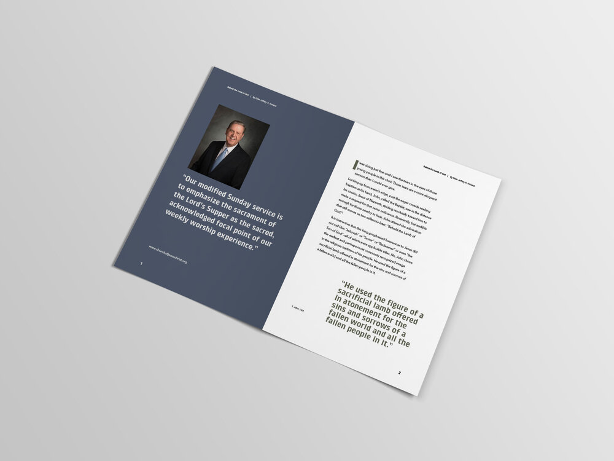
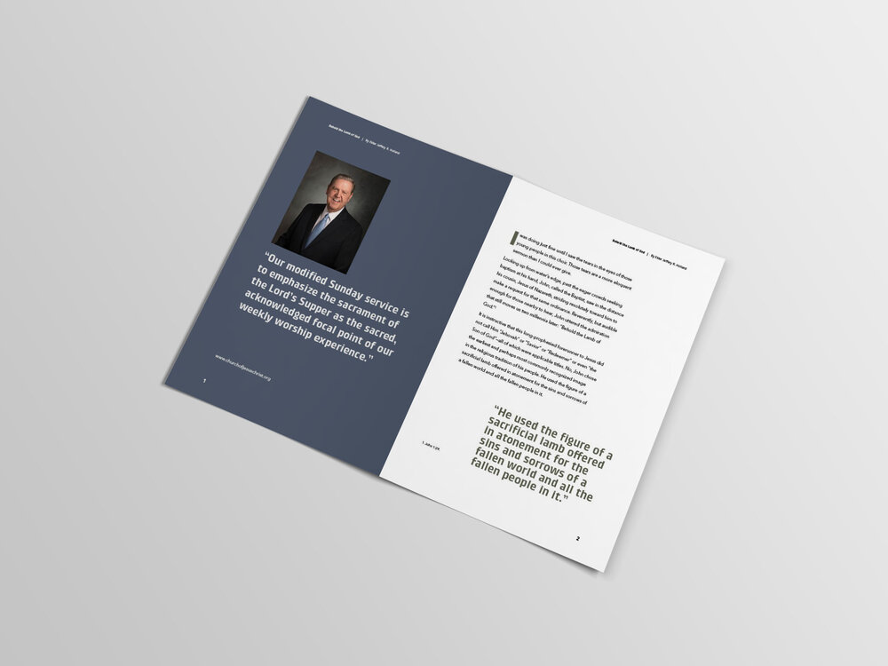

PSA Ad Poster- For this project I was asked
to make a poster shariing the dangers of
pollution in the ocean. I created a turtle completely
made of trash bags that I drew. I
created
most of this posteer in Photoshop and
finished it off with text in Illustrator.
Business Card- For this project we were
asked to design a business card consisting of
3 colors and 2 types of text fonts. I created a
logo or watermark of sometype to add interest
to the card and to be able to create a design
pattern on the back. I was able to create this
whole busineess card in Illustrator.
 

LDS Talk Pamphlet Design- For this
project I was required to reconstruct an LDS
General Conference talk into a new design
layout. I learned a lot more about Indesign
through this project and using grids to organize
the material for my design. Also I was
able to
understand and learn which fonts and colors
look best together.